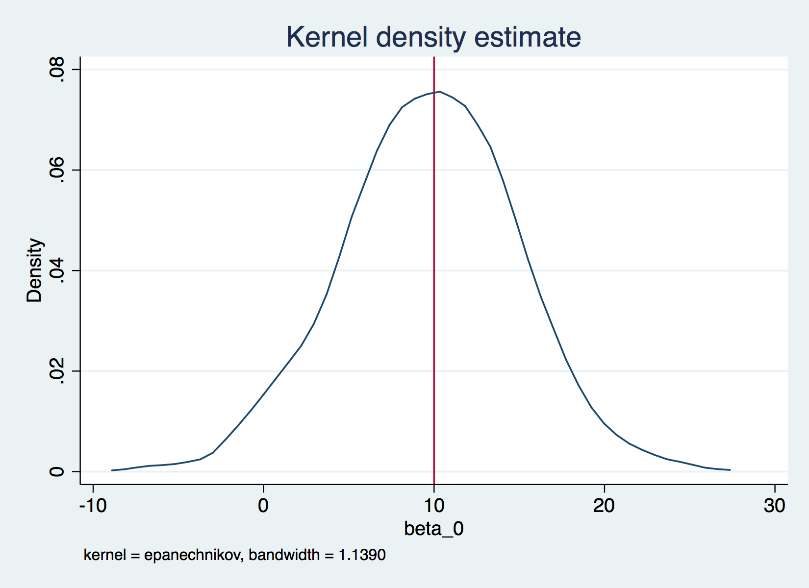
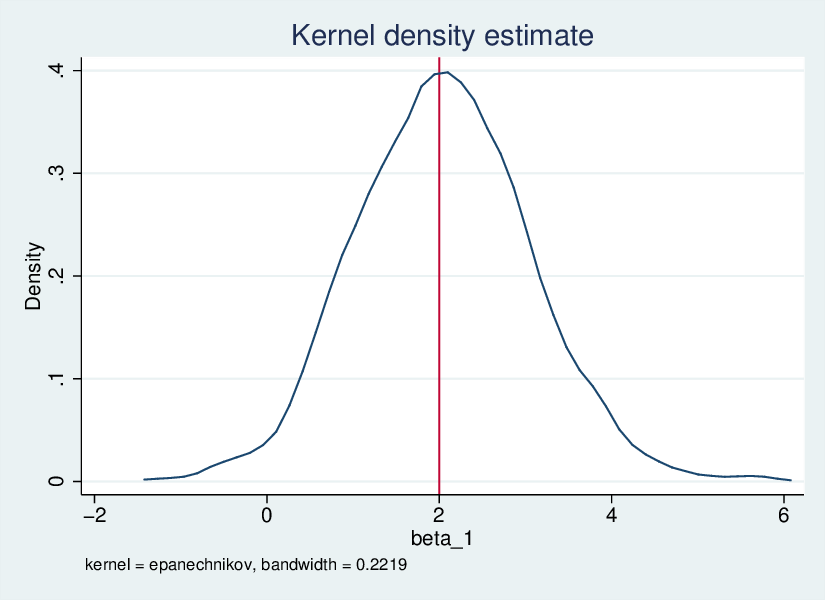

LPO 9952 | Spring 2018
In most intro regression classes, the emphasis is on learning proofs, either directly or through the instructor providing intuition around proofs. However, there is another way to learn the topics: simulation. When using simulation, you create the population of interest, apply an estimator, then learn about the properties of that estimator through repeatedly sampling from the population and calculating estimates. This is known as the Monte Carlo method, in that the analyst uses repeated random sampling. The term comes from Stanislaw Ulam, who came up with the idea to solve computational problems as part of the Manhattan project. Today, we'll use simulation to understand some basic properties of regression.
We begin with a much sinmpler example. The central limit theorem says that if we repeatedly sample from a larger population, the sampling distribution of means will be normal, and will have a mean equal to the population parameter. The code below checks if that's actually the case.
. local mymean 5
. local mysd 1
. local pop_size 10000
. local sample_size 100
. local nreps 1000
. // Create variable x based on values above
. drawnorm x, means(`mymean') sds(`mysd') n(`pop_size')
(obs 10000)
. save x, replace
file x.dta saved
. // Population mean
. mean x
Mean estimation Number of obs = 10000
--------------------------------------------------------------
| Mean Std. Err. [95% Conf. Interval]
-------------+------------------------------------------------
x | 4.997567 .0098891 4.978182 5.016952
--------------------------------------------------------------
. scalar pop_mean=_b[x]
. // Popoluation standard deviation
. tabstat x, stat(sd) save
variable | sd
-------------+----------
x | .9889123
------------------------
. mat M=r(StatTotal)
. scalar pop_sd=M[1,1]
. preserve // Set return state
. sample `sample_size', count // Take a sample
(9900 observations deleted)
. mean x // Calculate mean
Mean estimation Number of obs = 100
--------------------------------------------------------------
| Mean Std. Err. [95% Conf. Interval]
-------------+------------------------------------------------
x | 5.099092 .1085449 4.883715 5.314468
--------------------------------------------------------------
. tabstat x, stat(sd) // Calculate sds
variable | sd
-------------+----------
x | 1.085449
------------------------
. restore //
. // Is CLT a real thing?
. if `xbar_example'==1{
. // create a place in memory called buffer which will store a variable called xbar in
> a file called means.dta
. postfile buffer xbar using means, replace
. forvalues i=1/`nreps'{
2. preserve // Set return state
3. quietly sample `sample_size', count // Keep only certain observations
4. quietly mean x // get mean
5. post buffer (_b[x]) // post the estimate to the buffer
6. restore // Go back to full dataset
7. }
. postclose buffer // Buffer can stop recording
. use means, clear
. kdensity xbar,xline (`mymean')
. graph export clt.`gtype', replace
(file clt.eps written in EPS format)
. mean xbar
Mean estimation Number of obs = 1000
--------------------------------------------------------------
| Mean Std. Err. [95% Conf. Interval]
-------------+------------------------------------------------
xbar | 4.999501 .0030579 4.9935 5.005502
--------------------------------------------------------------
. scalar simulate_mean=_b[xbar]
. //Here's whate SE should be:
. scalar hypo_se=`mysd'/sqrt(`sample_size')
. //Here's what SE is:
. tabstat xbar,stat(sd) save
variable | sd
-------------+----------
xbar | .0966992
------------------------
. mat M=r(StatTotal)
. scalar simulate_se=M[1,1]
. }
```
We can compare our estimate of $\\bar{x}$ with the value we specified to see if the value in repeated samples does indeed converge on the true population parameter.
<img src = "clt.png" />
*Quick Exercise* Does our estimate of the standard deviation follow the same pattern as our estimate of the mean?
Basic Regression
----------------
In regression, the central finding is the same, but as applied to coefficients. That is, in repeated samples, the sampling distribution of coefficients will be distributed normal, with a standard error equivalent to the standard deviation of the sampling distribution. Below we generate a population where `y` is a linear function of `x1` plus an error term. We then repeatedly sample from that population, calculate our estimate of the parameter of interest, and accumulate results over multiple iterations. We can then show an empirical representation of the sampling distritbuion.
. use x, clear
. // Generate error term
. local error_sd 10
. drawnorm e, means(0) sds(`error_sd')
. // Set values for parameters
. local beta_0=10
. local beta_1=2
. // Generate outcome
. gen y=`beta_0'+`beta_1'*x+e
. // Run MC study for basic regression
. if `reg_example_1'==1{
. // create a place in memory called buffer which will store a variable called xbar in
> a file called means.dta
. postfile buffer beta_0 beta_1 using reg_1, replace
. forvalues i=1/`nreps'{
2. preserve // Set return state
3. quietly sample `sample_size', count // Keep only certain observations
4. quietly reg y x // get parameter estimates
5. post buffer (_b[_cons]) (_b[x]) // post the estimate to the buffer
6. restore // Go back to full dataset
7. }
. postclose buffer // Buffer can stop recording
. // Open up results of MC study for basic regression
. use reg_1, clear
. kdensity beta_0, xline(`beta_0')
. graph export beta_0.`gtype', replace
(file beta_0.eps written in EPS format)
. kdensity beta_1, xline(`beta_1')
. graph export beta_1.`gtype', replace
(file beta_1.eps written in EPS format)
. mean beta_0
Mean estimation Number of obs = 1000
--------------------------------------------------------------
| Mean Std. Err. [95% Conf. Interval]
-------------+------------------------------------------------
beta_0 | 9.692618 .1630616 9.372635 10.0126
--------------------------------------------------------------
. mean beta_1
Mean estimation Number of obs = 1000
--------------------------------------------------------------
| Mean Std. Err. [95% Conf. Interval]
-------------+------------------------------------------------
beta_1 | 2.048219 .0317356 1.985943 2.110495
--------------------------------------------------------------
. }
```As with the above example, we can compare our estimates of β0 and β1 to the values we set.


Quick Exercise What if y is not normally distributed? Does regression still work then?
Quick Exercise What if the error term is not normally distributed? Does regression still work then?
One key question for regression is omitted variables bias. The idea here is that there is an additional variable x2 that is related to y and to x1 that may affect our estimates of the coefficient for x1. Again, below we simulate this problem, starting with a variable x2 that is related to x1 and to y, and estimating a regression with only x1 included. We can see what this does to our sampling distrbution under different circumstances.
. local my_corr=.02
. local my_means 10 20
. local my_sds 5 10
. // Create variable x based on values above
. drawnorm x1 x2, means(`my_means') sds(`my sds') corr(1,`my_corr'\`my_corr',1) n(`pop
> _size') cstorage(lower)
(obs 10000)
. drawnorm e, mean(0) sd(`error_sd')
. local beta_0=10
. local beta_1=2
. local beta_2=4
. gen y= `beta_0'+`beta_1'*x1 +`beta_2'*x2 + e
. if `reg_example_2'==1{
. // create a place in memory called buffer which will store a variable called xbar in
> a file called means.dta
. postfile buffer beta_0 beta_1 using reg_2, replace
. forvalues i=1/`nreps'{
2. preserve // Set return state
3. quietly sample `sample_size', count // Keep only certain observations
4. quietly reg y x1 // get parameter estimates
5. post buffer (_b[_cons]) (_b[x]) // post the estimate to the buffer
6. restore // Go back to full dataset
7. }
. postclose buffer // Buffer can stop recording
. use reg_2, clear
. kdensity beta_1, xline(`beta_1')
. graph export ovb.`gtype', replace
(file ovb.eps written in EPS format)
. }
. exit
end of do-fileQuick exercise What happens to our estimate of x1 as the correlation between x1 and x2 grows stronger?
Quick Exercise What happens if the error term is correlated with x1? Does regression still work then?
The above is fine for "classroom" style examples, where you're trying to figure out some general property of regression. In general, though, we want to apply these tools in a way that helps us understand real-world problems.
The key here is to create a dataset that is as similar as possible to your actual data. There are two aspects of this to consider:
The second element is more difficult. Most statistical programming languages can easily generate variables from a wide variety of distributions. It's getting the covariances right that's hard. This is particularly true of categorical variables
In Stata, the best solution I've found is to use the drawnorm command to create a set of continuous variables that have the right correlations with one another, then turn them into binary variables that cover the correct proportion of the population. This won't be exactly the same as your data, but we can get pretty close.
To fix ideas, consider that we might want to estimate the impact of planning to go to a four year institiution on math scores, but we think that students who have received high quality counseling will both be more likely to plan to go to college and will have higher math scores. We don't have a measure of high quality counseling. Omitting this variable will bias our results, but the question is by how much?
In the worked example in the do file, I use an existing correlation matrix cormat and add another variable to it that has the properties that an omitted variable might have.
. mat newcol=(0.01\.5\-.2\.5\.5) /*Adds a column */
.
. mat cormat2=cormat,newcol
.
. mat cormat2=cormat2\0.01,.5,-.2,.5,.5,1 /*Adds a row */
.
. mat li cormat2
symmetric cormat2[6,6]
female p_fouryr urm pared_bin byses1 c1
female 1
p_fouryr .07380079 1
urm .00951101 -.09993916 1
pared_bin -.00697178 .26393122 -.15579093 1
byses1 -.02800299 .31752007 -.28091318 .706646 1
r6 .01 .5 -.2 .5 .5 1
.
. corr2data female_st plans_st race_st pared_st ses counsel_st, corr(cormat2) n(`pop
> size')
(obs 160,000)
.